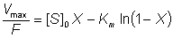

Enzyme Technology
Packed bed reactors
The most important characteristic of a PBR is
that material flows through the reactor as a plug; they are also called plug
flow reactors (PFR). Ideally, all of the substrate stream flows at the same
velocity, parallel to the reactor axis with no back -mixing. All material
present at any given reactor cross -section has had an identical residence time.
The longitudinal position within the PBR is, therefore, proportional to the time
spent within the reactor; all product emerging with the same residence time and
all substrate molecule having an equal opportunity for reaction. The conversion
efficiency of a PBR, with respect to its length, behaves in a manner similar to
that of a well -stirred batch reactor with respect to its reaction time (Figure
5.2(b)) Each volume element behaves as a batch reactor as it passes through the
PBR. Any required degree of reaction may be achieved by use of an idea PBR of
suitable length.
The flow rate (F) is equivalent to VolS/t for
a batch reactor. Therefore equation (5.5) may be converted to represent an ideal
PBR, given the assumption, not often realised in practice, that there are no
diffusion limitations:

(5.6)
In order to produce ideal plug -flow within
PBRs, a turbulent flow regime is preferred to laminar flow, as this causes
improved mixing and heat transfer normal to the flow and reduced axial back-mixing. Achievement of high enough
Re may, however, be difficult due to
unacceptably high feed rates. Consequent upon the plug -flow characteristic of
the PBR is that the substrate concentration is maximised, and the product
concentration minimised, relative to the final conversion at every point within
the reactor; the effectiveness factor being high on entry to the reactor and low
close to the exit. This means that PBRs are the preferred reactors, all other
factors being equal, for processes involving product inhibition, substrate
activation and reaction reversibility. At low Re the flow rate is proportional
to the pressure drop across the PBR. This pressure drop is, in turn, generally
found to be proportional to the bed height, the linear flow rate and dynamic
viscosity of the substrate stream and (1 - e)2/e3 (where
e is the porosity of
the reactor; i.e., the fraction of the PBR volume taken up by the liquid phase),
but inversely proportional to the cross-sectional area of the immobilised
enzyme pellets. In general PBRs are used with fairly rigid immobilised-enzyme
catalysts (1 -3 mm diameter), because excessive increases in this flow rate may
distort compressible or physically weak particles. Particle deformation results
in reduced catalytic surface area of particles contacting the substrate-containing solution, poor external mass transfer characteristics and a
restriction to the flow, causing increased pressure drop. A vicious circle of
increased back-pressure, particle deformation and restricted flow may
eventually result in no flow at all through the PBR.
PBRs behave as deep-bed filters with respect
to the substrate stream. It is necessary to use a guard bed if plugging of the
reactor by small particles is more rapid than the biocatalysts' deactivation.
They are also easily fouled by colloidal or precipitating material. The design
of PBRs does not allow for control of pH, by addition of acids or bases, or for
easy temperature control where there is excessive heat output, a problem that
may be particularly noticeable in wide reactors (> 15 cm diameter).
Deviations from ideal plug-flow are due to back-mixing within the reactors,
the resulting product streams having a distribution of residence times. In an
extreme case, back-mixing may result in the kinetic behaviour of the reactor
approximating to that of the CSTR (see below), and the consequent difficulty in
achieving a high degree of conversion. These deviations are caused by
channelling, where some substrate passes through the reactor more rapidly, and
hold-up, which involves stagnant areas with negligible flow rate. Channels may
form in the reactor bed due to excessive pressure drop, irregular packing or
uneven application of the substrate stream, causing flow rate differences across
the bed. The use of a uniformly sized catalyst in a reactor with an upwardly
flowing substrate stream reduces the chance and severity of non-ideal
behaviour.
Home
| Back | Next
This page was established in 2004 and last updated by Martin
Chaplin
on
6 August, 2014
|